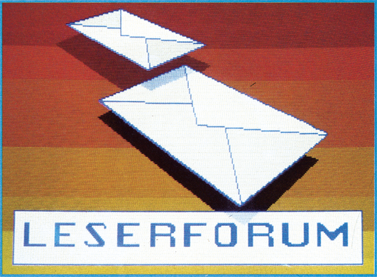

C 64 auch für Blinde?
Ich würde gerne wissen, ob es eine Möglichkeit gibt, den C 64 so umzurüsten, daß auch Blinde mit ihm arbeiten können. Ist es zum Beispiel möglich, eine Blindenschriftlesezeile anzuschließen?
Welche Software- und Hardware-Lösungen gibt es?
Alphatronic-CP/M-Disketten auf C 128-CP/M-Disketten kopieren?
Wie kann ich Programme von einer Alphatronic-CP/M-Diskette auf eine C 128-CP/M-Diskette kopieren oder lesen?
Änderungen im C 64-Kernel
Ich habe in meinem C 64 das Kernel, Bereich $E000 bis $FFFF, auf ein EPROM gebrannt. Ich möchte beim Einschalten meines C 64 eine andere Text-, Hintergrund- und Rahmenfarbe haben. Wer kann mir dabei helfen?
Briefkontakt gesucht
Ich suche Kontakte zu Computer-Fans in der Bundesrepublik. Ich habe einen C 64, aber leider keine Software, Bücher oder Magazine.
Wer hat Interesse, mit mir in Briefkontakt zu treten? Ich verstehe leider die deutsche Sprache nicht so gut.
Meine Adresse:
RGB-Monitor aus Spielautomaten am C 64
Kann ich einen RGB-Monitor aus einem Spielautomaten an einen C 64 anschließen? Wer liefert das Know-how?
Lange Strings einlesen?
Wie kann man bei einem Commodore-Computer Strings mit einer Länge von mehr als 80 Zeichen einlesen?
Ausgabe 7/86
Hier gibt es keinerlei Tricks, die einzige Möglichkeit ist, eine Maschinenroutine zu benutzen. Diese ist genauso schnell wie der INPUT #-Befehl.
10 FOR I=49152 TO 49217: READ A: B=B+A: POKE I,A: NEXT: IF B <>8731 THEN PRINT"{CLR} FEHLER": END
1000 DATA32,241,183,32,198,255,160,0,32,207,255,201,13,240,9,153
1001 DATA66,192,200,208,243,76,88,182,152,72,32,253,174,32,139
1002 DATA176,133,73,132,74,104,32,117,180,160,2,185,97,0,145,73
1003 DATA136,16,248,160,0,185,66,192,145,98,200,196,97,208,246,76
1004 DATA204,255,0Diese Routine belegt den Speicherplatz 49152 bis 49474.
Syntax:
SYS 49152,{Kanal},{String}
Kanal: Sekundäradresse der Floppy-Station
String: es sind alle String-Variablen zulässig.
Wenn nach 255 Zeichen noch kein RETURN (CHR$(13)) folgt, erscheint ein STRING TO LONG ERROR.
Wer kann helfen?
Bei dem Programm »Multidata 64« steigt der Computer beim Programmpunkt »Reorganisieren« regelmäßig aus. Wer kennt die Ursache?
Ausgabe 6/86
Unterlassen Sie es, Datensätze im Programmpunkt »Arbeiten mit bestehenden Dateien« durch »l« zu löschen. Überschreiben Sie den Datensatz statt dessen. Füllen Sie zum Beispiel alle (oder auch nur die Index-) Felder mit dem Wort »Leer«. Sie werden keine Schwierigkeiten haben, die leeren Datensätze wiederzufinden, wenn Sie sie durch neue ersetzen wollen. Es treten dann keine Fehlermeldungen mehr auf, wenn Sie mit der Option »(n)ächster« auf eine gelöschte Datensatznummer treffen.
DMA am C 64
Wer hat Erfahrungen mit dem DMA-Eingang am C 64? Woher wissen die Speicherbausteine, wann geschrieben und wann gelesen wird?
Ausgabe 8/86
Führt die DMA-Leitung Low-Pegel, so sind der Adreß- und Datenbus, sowie die R/W-Leitung der CPU hochohmig. Dies ermöglicht einem externen Prozessor auf den Adreß- und Datenbus des C 64 zuzugreifen. Es ist jedoch zu beachten, daß der Prozessor nur darauf zugreifen sollte, während der zweite Taktgeber Low-Pegel führt, da die erste Taktphase (unter Umständen auch die erste Phase des zweiten Takts) vom VIC für den Zugriff auf Zeichen- und Spritedaten benötigt wird. Die Schreib-/Lese-Steuerung erfolgt über die an Pin 5 herausgeführte R/W-Leitung.
Bremse für Textomat+
Wer kennt eine Möglichkeit, das Textprogramm Textomat+ beim Druck an einer bestimmten Stelle anzuhalten, um das Typenrad der Schreibmaschine Triumph-Adler Gabriele 9009 zu wechseln?
Ausgabe 9/86
Als eine Möglichkeit schlage ich die Verwendung des Steuerzeichens "ndx:name" vor. Hierbei muß man jedes Textstück, das man drucken will, vorher auf Diskette speichern, wobei an den Textenden jeweils das Steuerzeichen stehen muß, das angibt, welcher Text folgen soll. Die genaue Anwendung des Steuerzeichens wird auf Seite 58 des Textomat+-Handbuches beschrieben.
Programme vom Apple II auf den C 128
Wie kann ich CP/M-Programme vom Apple II auf den C 128 übertragen?
Ausgabe 7/86
Es gibt ein Modul von der Firma Heribert Bieling, Grüner Hof 14, 5000 Köln 60
Wer kennt Olympia Carrera?
Wer hat Erfahrungen mit der Typenradschreibmaschine Olympia Carrera, und weiß, wie man die Maschine mit dem Programm Vizawrite auf dem C 64 zum Laufen bekommt?
Ausgabe 7/86
Die Buchstabencodes sind identisch mit den von Commodore benutzten. Probleme ergeben sich jedoch mit definierten Sonderzeichen, hauptsächlich mit den nur in Deutschland verwendeten Umlauten. Da Vizawrite keine Möglichkeit zur Definition der Buchstabencodes besitzt, kann man die Umlaute der Schreibmaschine nicht mit Vizawrite erreichen. Nur wenn man keinen Wert auf Umlaute und Steuerzeichen legt, kann man das Programm uneingeschränkt verwenden.
Eine andere Möglichkeit würde ein Textverarbeitungsprogramm mit Druckertabelle bieten; beispielsweise das Programm »Master-Text« aus Ausgabe 6/86. Es kann die Schreibmaschine besser ausnutzen. Selbst Umlaute lassen sich verwenden. Um Umlaute zu definieren, muß man sich eine Code-Tabelle dieser »Sonderzeichen« anlegen. Steuercodes können dem Handbuch zum Interface entnommen werden.
Wer kennt den GX-80?
Ist es möglich, das Betriebssystem des GX-80 von Epson so zu ändern, daß die deutschen Umlaute geschrieben werden können? Kann man den GX-80 auch dazu bringen, Hi-Eddi-Grafiken im Großformat auszudrucken?
Ausgabe 7/86
Zur ersten Frage gibt es zwei Möglichkeiten: 1) Mit dem StarTexter im MPS-801-Modus oder 2) mit dem Centronics-Modul von Epson. Preis 300 Mark.
Zur zweiten Frage gibt es gleich drei Möglichkeiten: mit dem oben erwähnten Modul, preiswerter jedoch mit dem Print Shop im »Screen Magic«-Modus, oder mit dem Programm Bigcopy aus dem Grafik-Sonderheft 4/85.
Nachlese zum Sumpf
In unserem Artikel »Neues aus dem Sumpf« forderten wir dazu auf, uns Ihre Meinung zu diesem Thema zu schreiben. Die Resonanz war überwältigend. Wir möchten uns hier bei allen bedanken, die sich bei uns gemeldet haben. Um Ihnen einen Eindruck von den Zuschriften zu geben, die uns erreichten, haben wir die inhaltlich wichtigsten Passagen aus einzelnen Briefen zusammengestellt. Im Interesse der Verfasser drucken wir nicht deren Namen ab, die aber der Redaktion bekannt sind.
(...) Ein weiteres Thema habt Ihr unserer Meinung nach vergessen. und zwar die Hardware-Piraterie. Sobald ein neuer Floppy-Speeder auf dem Markt erscheint, sind viele da, die ihn nachbauen. Wenn diese Nachbauten wenigstens funktionieren würden, wäre es ja nur halb so schlimm, doch uns als passionierten Elektronikern dreht sich der Magen um, wenn wir sehen, was für ein Schrott da angeboten wird! (...)
(...) Das härteste war aber, daß ich eine Raubkopie eines von mir gefertigten Bestellprogrammes von 18 KByte gefunden habe. Weiß der Teufel, warum es kopiert wurde, es ist vollkommen firmenspezifisch aufgebaut und für den Anwender unbrauchbar. (...)
(...) Mit Ihrem Artikel »Raubkopierer: Neues aus dem Sumpf« haben Sie wieder mal ihre geschätzte Leserschaft in den Allerwertesten getreten. Moralisierend erheben Sie den kleinen Zeigefinger und lassen lauter kleine Luftbläschen ab. (...) Aus Sicht der Software-Firmen ist das OK. Es liegt in ihrem Interesse, Programme, deren reiner Materialwert unter 10 Mark liegt, für teures Geld zu verkaufen. Tja, und dann nehme ich mir die 64'er, Ausgabe 4/86, hervor und lese mir noch einmal das Interview mit Harald Speyer durch. Und was ist da zu lesen: »Jeder, der sich einen C 64 kauft, hat von seinen Freunden ein riesiges Reservoir an kopierter Software. Da ist von unserer Sicht nichts dagegen einzuwenden, solange das nicht professionell kopiert wird.« Ist Harald Speyer ein schlechter Mensch, der unserer ganzen moralischen Verachtung bedarf? — Nein, natürlich nicht, Harry hat nur ein anderes Interesse als die Software-Firmen. Er weiß, wem er es zu verdanken hat, daß sich mit dem C 64 viel Geld verdienen läßt: den vielen Raubkopierern. (...) Als Magazin für Computer-Fans sollten sie sich um die Interessen der Computerfans kümmern, für Sie eintreten. In Ihrem Artikel machen Sie exakt das Gegenteil! Wenn Sie schon Ihre Anzeigenkunden halten wollen und die redaktionellen Lückenfüller entsprechend verfassen, dann sollten Sie Ihre Zeitschrift ehrlicherweise umbenennen in »64'er — Mitteilungspostille der internationalen Softwarewirtschaft« (...)
Anm. d. Red.: Daß eine Diskette mit Anleitungsbuch einen reinen Materialwert von 10 Mark hat, wird wohl keine Software-Firma abstreiten. Allerdings steckt eine enorme geistige Arbeit hinter einem Programm. Und ein Programmierer möchte doch auch gerne von seiner Arbeit leben können, oder? Verpackungs-, Versand- und Werbungskosten kommen dann genauso hinzu wie die Löhne der Mitarbeiter, die sich um den Versand und die Aufmachung kümmern. Außerdem möchte der Einzelhändler, bei dem man normalerweise die Programme kauft, auch etwas verdienen. Dies, und vieles weitere mehr, addiert sich zu Preisen von 30 bis 60 Mark.
Wer sich außerdem einen C 64 kauft, mit dem festen Vorsatz, sich illegal am geistigen Eigentum anderer Leute zu vergreifen, indem er deren Programme kopiert, wird nicht von der Zeitschrift 64'er unterstützt. Auch verstehen wir unter der Bezeichnung »Computerfan« nicht einfach nur Raubkopierer, sondern alle Menschen, die sich ernsthaft oder aus Hobbygründen mit dem C 64 beschäftigen. Daß darunter auch ehrliche Käufer von Software sind, beweisen zahlreiche Leserbriefe.
(...) Wenn die Firmen den Markt nicht so mit Software überschwemmt hätten, würden die meisten Besitzer mehr und besser programmieren können. Denn was soll heute noch ein Computerfreak Tolles programmieren, wenn es sowieso schon alles gibt und obendrein noch besser ist? Ich habe mir in meiner langjährigen Praxis erst ein Programm gekauft, da der Preis anständig ist, das Handbuch gut ist und das Programm (StarTexter) unschlagbare Spitze ist. (...) Da der Sybex-Verlag ganz auf einen Kopierschutz verzichtet hat und mir damit sein Vertrauen ausgesprochen hat, habe ich das Programm erst zweimal an sehr gute Freunde weitergegeben, die sich das Programm trotz des relativ niedrigen Preises nicht kaufen konnten. (...)
(...) Mit dem Wort Sumpf versucht Ihr beim unbedarften Leser die Assoziation zu wecken, alle Cracker oder Raubkopierer wären finster dreinblickende Gestalten, die dauernd im schwarzen Trenchcoat mit hochgeschlagenem Kragen durch die Gegend düsen und die gecrackte Soft im schwarzen Aktenköfferchen mit sich herumschleifen. In Wirklichkeit sind wir aber aufgeweckte nette Jungens und Mädels, mit denen man ruhigen Gewissens auch mal ein Bierchen trinken kann. Tja, das mit den Metaphern ist so eine Sache; da kann schnell was ins Auge gehen. (...)
(...) Die Chance, zum dümmsten Spruch des Jahres gewählt zu werden, hat wohl der Satz eines von euch zitierten ehemaligen Section 8-Mitgliedes: »Wenn heute jemand meine eigenen Programme knacken und weitergeben würde, wär ich ganz schön sauer.« Wer halt nur Bits und Bytes im Schädel hat, dem können leicht solche Fauxpas über die Lippen kommen. Der Ehemalige hatte früher keine Skrupel, anderer Leute Programme zu cracken, jedoch für sich selbst fordert er Schonung; aus dem Saulus wurde ein Paulus, oder vielleicht besser: Was du nicht wünscht, was man Dir tut, das füg' auch keinem anderen zu. (...)
(...) und daß »Insider« bestätigen, daß immer mehr gecrackte Programme bei längerer Spielzeit abstürzen. Ich finde es erstaunlich, daß Ihr Euch als Informationsquelle auf »Insider« beruft. Echte Insider — also Raubkopierer mit Leib und Seele — spielen Programme nie voll durch, spielen tun nur die kleinen Kinder und »Endverbraucher«, welche wohl kaum als »Insider« bezeichnet werden können. (...)
(...) Zu den von den Crackern selbstproduzierten Sensationsmeldungen bleibt nur zu sagen: Jeder braucht Publicity, auch die Software-Firmen, die oftmals unklare Informationen über den Entwicklungsstand eines Programms veröffentlichen. (...)
(...) Die absolute Schizophrenie aber ist der Hinweis, den Euer Magazin seit einiger Zeit unter die Rubrik »Computer-Markt« setzt: Just im selben Heft, in dem ein Artikel über die Cracker-Szene zu lesen ist, stehen 50 Seiten weiter die Kleinanzeigen der bekanntesten Cracker und Distributoren Europas: da wirbt die »1001-Crew« um neue Tauschpartner und auch der bekannte belgische Softwarepirat »CFB« darf ungehindert sein rotes Fähnlein schwenken (...)
Anm. d. Red.: Wir sind verpflichtet, jede Anzeige zu veröffentlichen, sofern nicht eindeutig auf das Angebot von Raubkopien geschlossen wird. Ein Anzeigentext wie »Möchtest du Software mit XYZ tauschen? Dann schicke eine Liste an ... Antwort mit 100%« kann deswegen von uns nicht beanstandet werden. Schließlich kann XYZ guten Gewissens behaupten, über diese Anzeige nur Original-Software zum Tausch anzubieten. Wir haben bei der Masse der Anzeigen keine Möglichkeit, dies im einzelnen durch »Testkäufe« und ähnliches zu überprüfen.
(...) Das Beispiel der Tonbandkassette: Wieviele Kopien einer bekannten Schallplatte existieren auch auf anderen Tonträgern? Eine Person kauft eine Platte, zehn andere überspielen sie. Das ist natürlich den Plattenfirmen nicht recht und es ist ja auch tatsächlich verboten. Mit einem Unterschied: Die Musikkopierer werden nicht in dem Maße kriminalisiert, wie das die Softwarehäuser mit ihren Problem-»Kunden« machen. (...) Der Lösungsweg liegt hier offen vor uns. Die Softwarefirmen und die Hersteller von Disketten sollten sich überlegen, ob über den Diskettenverkaufspreis nicht eine finanzielle Entschädigung der Programmvertreiber möglich wäre. (...)
Anm. d. Red.: Leider ist das in diesem Zusammenhang vielbeschworene Beispiel der Musikkassette nicht auf den Computermarkt übertragbar. Da ist zunächst einmal ein technischer Unterschied: Wenn Sie von einer Schallplatte Aufnahmen für Freunde machen, ist das meist eine einmalige Sache. Die Freunde werden ihre Aufnahmen nicht wiederum umkopieren und diese Kopien dann wiederum kopieren und, und, und... Der Grund ist die analoge Aufnahmetechnik. Schon beim zweiten oder dritten Umkopieren auf haushaltsüblichen Geräten treten deutlich hörbare Qualitätsverluste auf. Software hingegen kann jederzeit fehlerfrei reproduziert werden, Verluste treten nicht auf. Eine GEMA-Gebühr auf Disketten müßte also zwangsläufig sehr viel höher ausfallen als bei Musikkassetten, da wesentlich mehr Kopien pro verkauftem Original zu erwarten sind.
Andererseits ist die GEMA-Lösung keine faire Lösung. Sollte sie angewandt werden, müßten ehrliche Programmierer und Software-Käufer, die mal ein Paket Leerdisketten benötigen, die Raubkopierer finanziell unterstützen.
Außerdem sieht der Tonträgermarkt ganz anders aus. Bei einer Single spricht man von einem Hit, wenn 300000 und mehr verkauft werden. Bei einem Spiel, das 39 Mark auf Kassette und 49 oder 59 Mark auf Diskette kostet, redet man von einem Hit, wenn mehr als 10000 Stück verkauft werden. Ein Verlust durch Kopien ist bei den Softwarefirmen wesentlich einschneidender.